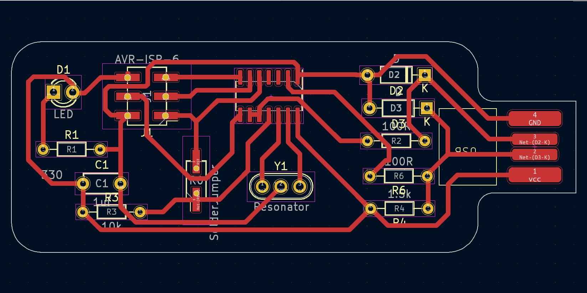

Overview
This documentation provides a simplified guide to building an AVR programmer with an ATtiny44A microcontroller. Follow the steps carefully and refer to the provided references for additional information and guidance.
Components and Tools
- ATtiny44A SMD microcontroller
- 6-pin ISP header or Pin Header
- Resonator 16 MHz
- Resistor (330 ohms)
- Capacitor 1uF
- Resistor 100 ohm x2
- Resistor 1.5K ohm
- Resistor 10K
- Zener Diode 3.3 V x2
Design Steps
Step 1: PCB Design
I used KiCad to design my PCB with a trace width of 0.6 and a clearance of 0.4.
Step 2: PCB Fabrication
I used FlatCAM and an SRM20 machine to fabricate my PCB.
Firmware Compilation (Linux)
- Install the necessary tools by running the following command in the terminal:
sudo apt-get install gcc-avr avr-libc avrdude flex byacc bison gcc libusb-dev - Download the firmware and unzip it using these commands:
wget http://academy.cba.mit.edu/classes/embedded_programming/firmware.zip && unzip firmware.zip - Open the Makefile and edit the following parameters:
- DEVICE (microcontroller)
- AVRDUDE (programmer)
- F_CPU (crystal speed)
- Compile the firmware.
Trial and Errors
- I designed a PCB with a USB-connector package. The goal was to design a small layout. But I couldn't find through-hole (THT) ATtiny84/44 components. I chose to keep all other components as (THT) while switching the ATtiny44 to (SMD).
- I tried to make the PCB single-layer with a 1x6 THT ISP header but it was challenging with a small layout . I decided to switch to a 2x3 pin header in SMD form. This adjustment allowed for a more manageable design. Note: This is a quick solution but not correct. You must create a custom pin header package (THT) because, at the end, I didnt find a pin header (SMD) and I put holes in the footprint.(^_^)
- During the fabrication step, I found a problem with the custom USB package. that was triggered by the modifications made during the first trial. When attempting to mirror the PCB for fabrication (vcc&gnd). I edited the custom package again to be suitable for this case, or you can replace it with a USB socket.